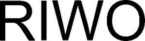

Trade Mark Journal No.2025/011 14 March 2025
WO0000001823937 (9,10,35,37,41,42,45)
Office of origin: Germany
Date of International Registration:2 February 2024
Date of designation in the UK:
2 February 2024

International priority date claimed: 2 August 2023
(Germany)
- Class 9
- Software, hardware and networks, in particular for medical and medical devices and instruments controlled, regulated, monitored and/or managed by programmes and for systems consisting of such devices and/or instruments to be installed in operating theatres; software for the management of patient data and for the documentation of surgical procedures; cameras, in particular CCD cameras, monitors, devices for recording, transmission and reproduction of sound and/or images; data processing equipment; computers; printers for computers; remote control equipment; video management apparatus and equipment and systems therefor for operating theatres; diagnostic apparatus and equipment and systems therefor using artificial intelligence, non- medical; augmented reality [AR] software for operating theatres; photographic and cinematographic apparatus for use with endoscopes.
- Class 10
- Endoscopes, endoscopic instruments and parts thereof included in this class; medical, surgical and medical-optical apparatus, appliances and instruments, in particular endoscopes, and parts of the aforesaid goods; rectoscopes; cystoscopes; urethrotomes; ureterorenoscopes; nephroscopes; lithotripsy apparatus; laser therapy apparatus; laparoscopes and laparoscopy apparatus; trocars and trocar sleeves; insufflators; HF generators in the nature of medical apparatus; arthroscopes; bronchoscopes; laryngoscopes; thoracoscopes; oesophagoscopes; accessories for the aforementioned goods, in particular medical light projectors, medical flashlight generators and medical stroboscopes; specialised electrical and electronic equipment and instruments, in particular those for coagulation or cutting of tissue, for the destruction of stones in body cavities by laser, ultrasound and/or hydraulic shock waves, and for carrying out injections; pumps for aspiration of human or animal tissue or secretions; pumps for irrigation of body cavities; medical and surgical instruments and apparatus [including voice-operated, remote-controlled and/or networked] and equipment consisting of such instruments and/or apparatus; operating tables; specialised furniture for medical purposes; lamps for medical purposes; medical instruments for use in spinal surgery; medical devices for shock wave therapy, in particular for urological stone treatment (ESWL), shock wave therapy (ESWT) and trigger point shock wave therapy (TPST); pumps for endoscopic instruments, included in this class; spinal retractors for the spine; surgical instruments for spinal surgery; orthopaedic appliances for the spine; endoscopes, endoscopic instruments and parts thereof included in this class for use in spinal surgery; medical instruments and parts thereof included in this class for use in spinal surgery.
- Class 35
- Business management and organisational consultancy related to the furnishing of operating theatres and medical examination rooms, electronic data processing, the management of patient data and the documentation of surgical procedures, database archiving, namely the documentation of surgical procedures and the compilation and management of patient data; retail and wholesale services relating to surgical, medical and medical instruments and apparatus and parts thereof.
- Class 37
- Repair and maintenance of apparatus, appliances and instruments in the fields of medical technology, precision mechanics, optics and electrical engineering.
- Class 41
- Education, training and technical advice for doctors, medical staff and nursing staff in connection with the functionality, handling and care of medical equipment, devices and instruments.
- Class 42
- Technical consultancy, in particular in connection with the furnishing of operating theatres and medical examination rooms, with the installation of data processing equipment and computer databases, with the management of patient data and with the documentation of surgical procedures; preparation of programmes for data processing; development of computer programmes for controlled, regulated, monitored and/or managed medical and medical devices and instruments and for systems consisting of such devices and/or instruments to be installed in operating theatres; scientific and technical development and testing of products and the usage methods.
- Class 45
- Licensing of software, hardware and networks, in particular for medical and medical devices and instruments controlled, regulated, monitored and/or managed by programmes and for systems consisting of such devices and/or instruments to be installed in operating theatres.
Richard Wolf GmbH
Representative: Patentanwälte Hemmer Lindfeld Frese Partnerschaft mbB, Wallstraße 33a, 23560 Lübeck, GERMANY